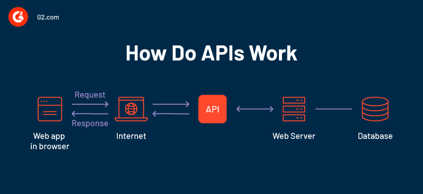

De toepassingslaag is het bovenste niveau in het OSI-model (Open Systems Interconnection) van netwerkprotocollen en -architectuur. Op dit niveau bevinden zich de softwareapplicaties die direct door gebruikers worden gebruikt,
zoals webbrowsers, e-mailclients en bestandsdelingsprogramma's. Deze laag biedt een interface waarmee gebruikers kunnen communiceren met netwerkbronnen en informatie kunnen uitwisselen met andere
computers en apparaten over een netwerk. Het omvat ook protocollen voor het opzetten, beheren en beëindigen van communicatiesessies. De toepassingslaag zorgt voor de uiteindelijke functionaliteit en interactie
van de eindgebruiker met het netwerk en geeft hen uiteindelijk toegang tot verschillende services en bronnen op een gebruikersvriendelijke manier.
Toepassingsprogramma
Toepassingsprogramma's worden simpeler gezegd ook wel apps genoemd. Het zijn softwaretoepassingen die zijn ontworpen om specifieke
taken uit te voeren. En functies te bieden aan gebruikers van computers en tablets. Hier twee leuke voorbeelden ervan:
Platformafhankelijk: Toepassingsprogramma's kunnen worden ontwikkeld voor verschillende besturingssystemen en apparaten.
Bijvoorbeeld, er zijn toepassingsprogramma's voor Windows, macOS, Android, iOS, enzovoort.
App Stores:Toepassingsprogramma's kunnen worden gedownload en geïnstalleerd vanuit app-winkels, zoals de Apple App Store, Google Play Store en Microsoft Store. Deze app-winkels bieden een centrale
locatie waar gebruikers apps kunnen vinden, downloaden en bijwerken.
Databases
Een database is een gestructureerde verzameling van gegevens georganiseerd in tabellen met rijen en kolommen. Deze gegevens worden opgeslagen op
een efficiënte manier. Databases kunnen worden gebruikt om informatie op te slaan, te beheren en te raadplegen. Ze stellen
gebruikers in staat om gegevens op te halen op basis van specifieke eisen en relaties tussen gegevens te modelleren hiermee bedoel ik het proces die
ze doorgaan om de gegevenstypen te analyseren en een definitie te geven. Databases maken gebruik
van querytalen zoals SQL om gegevens te manipuleren. Ze worden in verschillende sectoren en toepassingen gebruikt, van zakelijke systemen tot
webtoepassingen en meer.
Maar wat doen ze dan voor ons?
Databases laten ons efficiënt werken met grote hoeveelheden data. Ze maken het bijwerken van gegevens makkelijker en betrouwbaar. Ze bieden
beveiligingsfuncties om de toegang tot informatie te beheren. Gegevens opslaan wordt nu makkelijker, ongeacht hoe groot, ze zorgen ervoor
dat je ze allemaal makkelijk op 1 plek kunt bewaren! Ze zorgen ervoor dat gegevens consistent en betrouwbaar
zijn. Door ingebouwde mechanismen, denk aan sensoren en taalvertalingen is de informatie betrouwbaar. Voor samenwerking en gegevensdeling zijn ze ook handig,
het is mogelijk om met meerdere gebruikers te gelijk toegang te krijgen tot bepaalde plekken, stel je ook voor mevrouw Hooff en meneer Douglas
gegevens over de les met elkaar willen delen, door databases kan dit allemaal.
API'S

Een API (Application Programming Interface) is een software-interface die het mogelijk maakt
dat twee applicaties met elkaar communiceren, hij verbindt de logische laag met de toepassingslaag. Je kunt ook zeggen de boodschapper een verzoek indient
bij een provider en vervolgens het antwoord terugkoppelt. Hij zorgt ervoor dat er gegevens van het besturingssysteem weer terug worden gestuurd naar een ander
systeem.
De werking van API'S
Stel je een bediende in een snackbar even voor, jij zit met je vrienden aan tafel met een menukaart
en je bent klaar om je favoriete gerecht te bestellen en de keuken is hierbij de leverancier die dat klaarmaakt voor je.
Je hebt en verbinding nodig om je bestelling door te geven aan de keuken en vervolgens het eten terug te ontvangen op jullie tafel. Dit is natuurlijk niet de kok, want die
is met andere dingen bezig. Je hebt iets nodig om de klant die eten bestelt en de kok die dat vervolgens bereidt, te verbinden met elkaar.
Hier komt de bediende of in dit geval de API in beeld! Zo simpel is het dus. Als jouw API goed is ontworpen, zal de bestelling ook zeker niet tegenvallen ;).
Nu eventjes in informatica-taal: Een API, of Application Programming Interface, is een set regels en protocollen waarmee verschillende softwaretoepassingen
met elkaar kunnen communiceren en gegevens kunnen uitwisselen. Het fungeert als een tussenlaag die het mogelijk maakt voor programma's om te "praten" met
andere programma's, waardoor ze functies en gegevens kunnen delen zonder dat ze de interne werking van elkaar hoeven te kennen. Kortom, een API maakt het
eenvoudiger voor ontwikkelaars om functionaliteit van andere software te gebruiken zonder de hele codebase te begrijpen, waardoor interoperabiliteit en hergebruik van
code mogelijk worden.